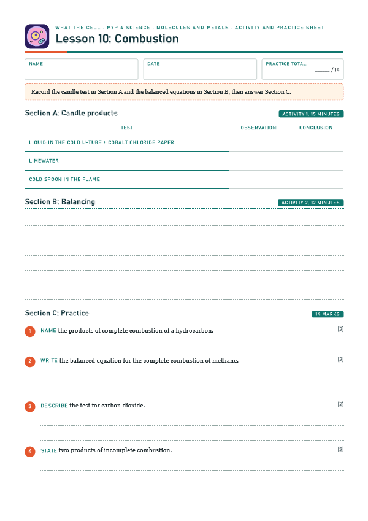

By the end of the lesson you can
- Write equations for complete combustion
- Compare complete and incomplete combustion
- Explain why carbon monoxide is dangerous
- Test for carbon dioxide and water
Keys: arrows or a presentation clicker move the slides, F for full screen. Slides with a red dot have a video or simulation.
Videos (all 5 minutes or less)
- 3:56
Complete and incomplete combustion
FuseSchool. While you watch: What are the products of complete combustion? Slide 9.
Simulations
- Lab
Print and practise

Activity and practice sheet
Used in the lesson’s activities, with practice questions. Your teacher has the answers.
Download (PDF)Lesson 10 slides
All 16 slides in one file, to read again or print. The video buttons on the slides open YouTube.
Download the slides (PDF)Revising? The Revision tab on the unit page has the unit notes and review.
Class activity pack
Everything to print for the lesson’s activities: picture cards, sorting mats, station cards with their kit lists, and the teacher’s set-up notes. Print it before class.
Download the activity pack (PDF)Notes: Combustion
combustion
Burning a fuel in oxygen, releasing energy. For example: a gas stove.
complete combustion
Plenty of oxygen: makes carbon dioxide and water. For example: blue flame.
incomplete combustion
Too little oxygen: makes carbon monoxide or soot. For example: yellow, smoky flame.
carbon monoxide
A toxic, colourless, odourless gas, CO. For example: from faulty heaters.
soot
Tiny particles of carbon. For example: black marks on pans.
limewater
Turns milky with carbon dioxide. For example: test for CO2.
Key words
| complete combustion | makes CO2 and H2O |
|---|---|
| incomplete combustion | makes CO or soot |
| carbon monoxide | toxic gas, CO |
| limewater | tests for CO2 |
| cobalt chloride paper | tests for water |